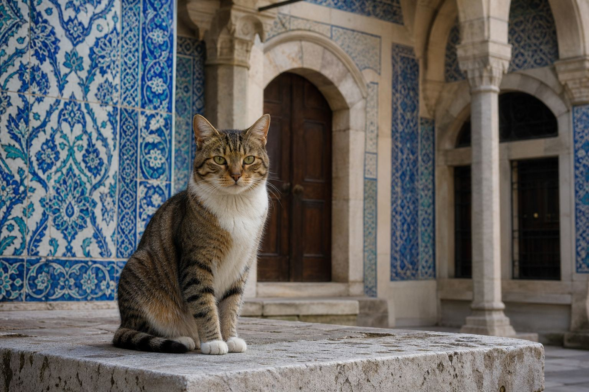
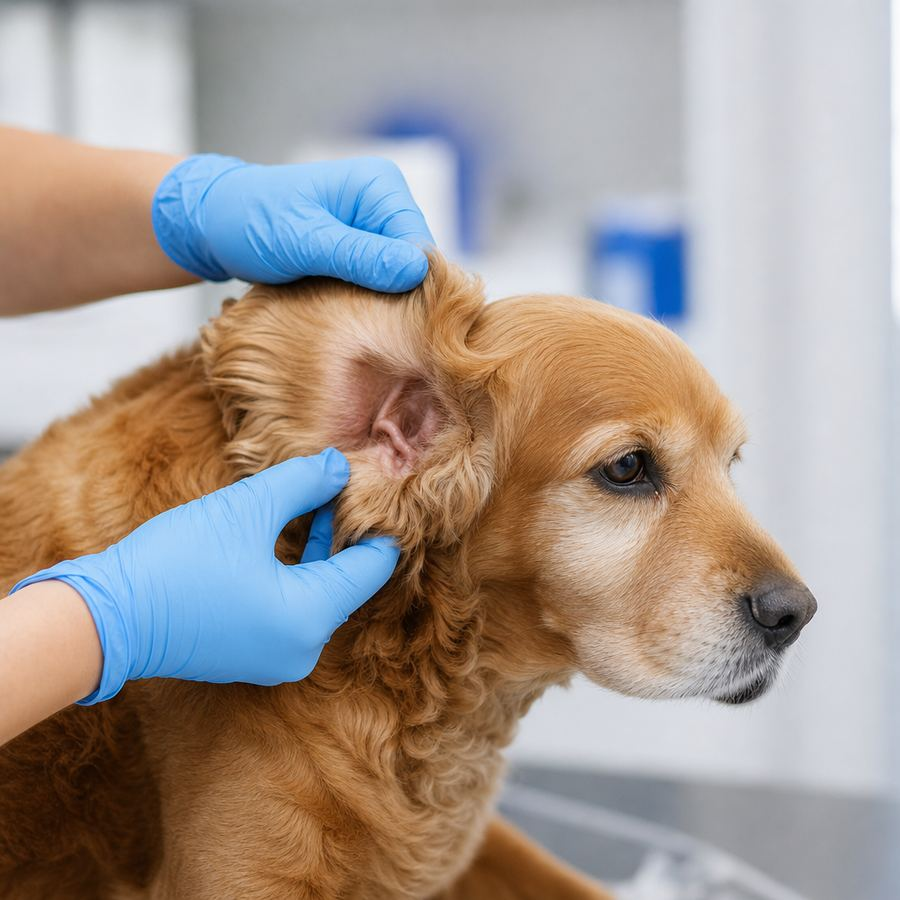
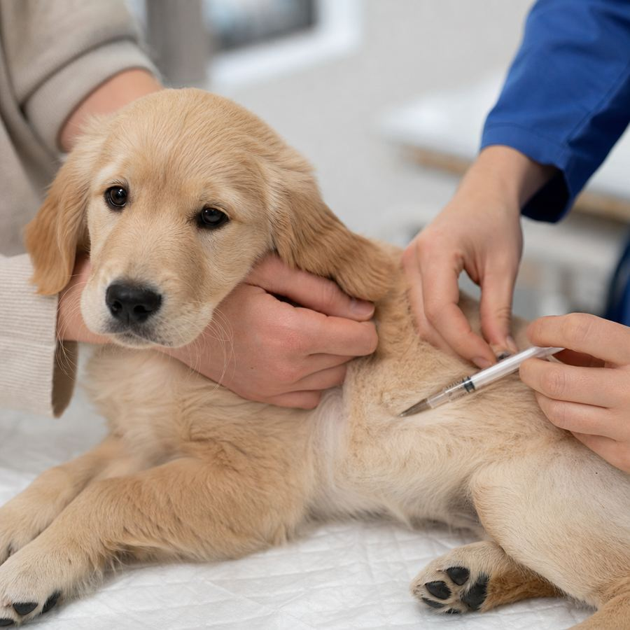

Fatih'in tarihi sokaklarında küçük ama özenli bir klinik. Kediniz de köpeğiniz de burada aceleye gelmez.

Temsili görselMahallenin tanıdık yüzü, dostunuzun güvenli adresi.
Ürkek kediden enerjik köpek yavrusuna, dostunuzun karakterine göre davranıyoruz. (Liste klinikle birlikte netleştirilecek.)
Check-up, aşı karnesi ve hatırlatmalar.
İş çıkışı gelin; 21.00'e kadar açığız.
Ön tahlil, operasyon ve sonrası takip.
Kan ve temel laboratuvar testleri.
Pire, kene ve kaşıntıya karşı koruma.
Diş taşı temizliği ve ağız kontrolü.
Gördüğünüz belirtileri işaretleyin. Bu bir teşhis değildir; içiniz rahat etmezse her durumda bizi arayın.
Seçtiğiniz belirtilere göre ne yapmanız gerektiğini burada göstereceğiz.
Saatler herkese açık rehberlerden alındı, klinikle teyit edilecek.
Akşemsettin Mah., 34080 Fatih/İstanbul
Telefon ve WhatsApp: 0536 632 45 06
Fotoğraflar temsilidir; kliniğinizin kendi fotoğraflarıyla değiştirilecek.


Telefonda beklemek yok. Size uygun saati birlikte bulalım.
Dostunuzun adını ve şikâyetini kısaca yazın; fotoğraf da gönderebilirsiniz.
Size bugün ya da yarın için uygun bir saat önerelim.
Varsa aşı karnesini de getirin; gerisini biz hallederiz.
Sorunuzun cevabı burada yoksa WhatsApp'tan yazın, hemen yanıtlayalım.
Gelebilirsiniz; ama önceden yazarsanız beklemeden muayene olursunuz. 09.00–21.00 arasında kapımız açık.
Yavrularda karma aşılar genellikle 6-8. haftada başlar, kuduz aşısı 12. haftadan sonra yapılır; ardından yıllık hatırlatmalarla sürer. Dostunuzun yaşına ve yaşam şekline göre takvimi muayenede birlikte çıkarırız.
Çoğu kedi ve köpekte 5-6 aylıktan sonra uygundur; ırk, kilo ve sağlık durumuna göre değişir. Ön muayene ve kan tahlilinden sonra en doğru zamanı birlikte belirleriz.
Nefes darlığı, zehirlenme şüphesi, kanama ya da bilinç kaybı gibi durumlarda vakit kaybetmeden 0536 632 45 06 numarasından bizi arayın; size ne yapmanız gerektiğini hemen söyleyelim.